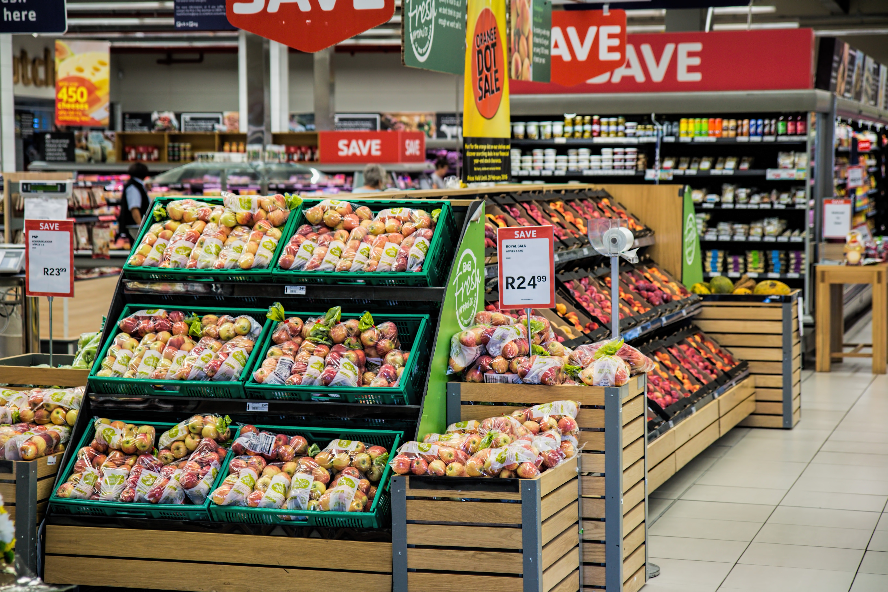

<!-- carousel -->
<div class="container-fluid">
  <div class="row">
    <div id="carouselExampleIndicators" class="carousel slide" data-ride="carousel">
        <ol class="carousel-indicators">
          <li data-target="#carouselExampleIndicators" data-slide-to="0" class="active"></li>
          <li data-target="#carouselExampleIndicators" data-slide-to="1"></li>
          <li data-target="#carouselExampleIndicators" data-slide-to="2"></li>
        </ol>
        <div class="carousel-inner">
          <div>
            <form id="search" (keydown)="onPress($event)" class="form-inline my-2 my-lg-0">
              <select name="category-selected" [(ngModel)]="category">
                <option>All</option>
                <option>Electronics</option>
                <option>Furniture</option>
                <option>Stationery</option>
                <option>Groceries</option>
              </select>
              <input name="query" [(ngModel)]="query" class="form-control mr-sm-2" type="text"
                placeholder="Search for your favorite deals here" aria-label="Search">
                <!-- search button -->
                <!-- on click of button show values for category and field-->
              <button type="button" (click)="showValue(query,category)"  class="btn btn-light"><i class="fas fa-search"></i></button>
            </form>
          </div>
          <div class="carousel-image carousel-item active">
            
          </div>
          <div class="carousel-image carousel-item">
            
          </div>
          <div class="carousel-image carousel-item">
            
          </div>
        </div>
          <a class="carousel-control-prev" href="#carouselExampleIndicators" role="button" data-slide="prev">
            <span class="carousel-control-prev-icon" aria-hidden="true"></span>
            <span class="sr-only">Previous</span>
          </a>
          <a class="carousel-control-next" href="#carouselExampleIndicators" role="button" data-slide="next">
            <span class="carousel-control-next-icon" aria-hidden="true"></span>
            <span class="sr-only">Next</span>
          </a>
      </div>
    </div>
</div>